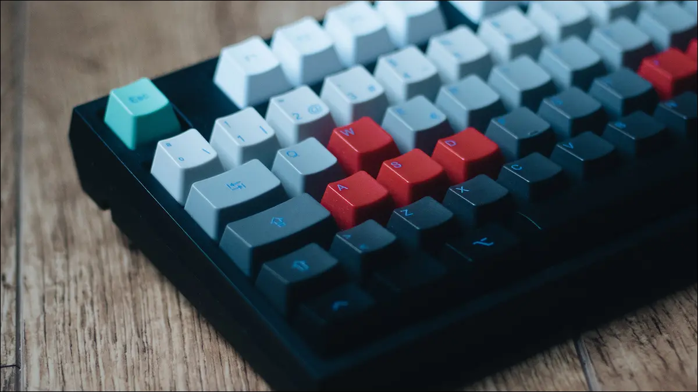

In this tutorial we will create input handling class.

Since this class is quite universal, may seem sophisticated at first and working whole for sole purpose, I will not use bullet points here. We will go through each step of its creation gradually to have a deep understanding.
First, create new class named InputHandler and move it into Classes folder. Since we not making a lib don’t update namespace when you asked through popup dialog, that will only get in the way. Or if you create your class inside Classes folder remove Classes from namespace name.
namespace Game.Classes {}Every WindowsForms visual component including Form has Control in its base class.
InputHandler is class works as a wrapper around any Control class descendant collecting its data. Create a var type of Control with name baseControl. And update constructor to get this base control and assign it to local variable :
public class InputHandler {
private Control baseControl;
public InputHandler(Control _control){
baseControl = _control;
}
}Next part
We need a way to store currently pressed keyboard and mouse keys. Create several lists for storing keys. We using List since it very easy to add and remove items and check for existing keys. Also wheel position and mouse cursor location in side Control.
//lists to store:
private List<Keys> curKeysDown = new (); // keyboard keys
private List<MouseButtons> curMouseBtnDown = new(); // mouse keys
private int curWheelDelta = 0; // current mouse wheel position
private PointF curMouseLocation = new (); // and cursor positionSyntax sugar tip:
You may notice or may not but there was some changes in C#. Before you have to write a full instance creation specifying type:
List<int> listOfInt = new List<int>();But in new standard you can omit a type and just write like this:
List<int> listOfInt = new();Before we move on we need another class to store this input data as snapshot. Game works differently from destkop application. Usually game has a loop that unpdating every 30 or 60 times per second and sometimes even higher.
Games are fastpace and constantly changing software that have to quickly respond to player input that unpredictable, so we need to make calculations and render everything from scratch every frame to make player experience as smooth as posssible.
- Usually we have two methods called each frame:
- Update Frame -> method where calculation happening
- Draw Frame -> method where draw everything based on calculations
Event based system used by Windows forms to handling user input is another unpredictable variable that working good in static UI’s, but no use in games. We can’t predict when event happens. To adress this we created list to store current input data, so it doesnt interfere with our stable Game Loop. And can be accessed when its needed instead. Even with all of this talking about speed and rsponsiveness this is may seem contradicting cause there are some latency when we check input only when we need. But this “need” happens so often in game loop so there are almost no noticeable latency.
But what if you want to know when key is pressed or released? Just now in this frame or already for some time?
This is why need another class to store input data snapshots from frame to frame. Create a class InputState inside same file or new, it does not matter since it used by a InputHandler. You can even put its implementation at the top of InputHandler.
in this class we creating:
- same variables to store snapshot of InputHandler input data.
- two constructors:
- one as default empty state, when the game starts
- another to make a snapshot but throwing InputHadler data as is
- GetCopy() method. That makes a new instance of InputState, using this class input data. We need this cause when we assing class instance to another class instance its just assign reference not a copy. And if something is gonna happen with a original object same happens with this instance we assigned it to. I will show where it may happen later
At last
low-leveldata retrievers, that are used only by another functions of InputHandler.- two functions that returning if key is pressed in current state
- for mouse buttons
IsMouseDown() - for keyboard keys
IsKeyDown()
- for mouse buttons
- and two getters
- mouse cursor location
- mouse wheel postition
Look at what we have, there is nothing sophisticated just copy it as is:
public class InputState {
private PointF mouseLocation = new ();
private List<Keys> keysDownList = new ();
private List<MouseButtons> mouseBtnDownList = new ();
private int wheelPosition = 0;
public InputState() { }
public InputState(List<Keys> _keysDownList, List<MouseButtons> _mouseBtnDownList, PointF _mousePosition, int _wheelPosition) {
keysDownList = _keysDownList;
mouseBtnDownList = _mouseBtnDownList;
mouseLocation = _mousePosition;
wheelPosition = _wheelPosition;
}
public InputState GetCopy() {
List<Keys> copyKeysDownList = new List<Keys>(keysDownList.ToArray());
List<MouseButtons> copyMouseBtnDownList = new List<MouseButtons>(mouseBtnDownList.ToArray());
PointF copyLocation = new PointF(mouseLocation.X, mouseLocation.Y);
return new InputState(copyKeysDownList, copyMouseBtnDownList, copyLocation, wheelPosition);
}
public bool IsMouseDown(MouseButtons gMouseButtons) =>
mouseBtnDownList.Contains(gMouseButtons);
public bool IsKeyDown(Keys gKeys) =>
keysDownList.Contains(gKeys);
public PointF Location => mouseLocation;
public int WheelPosition => wheelPosition;
}First some syntax sugar tips from this code: In a new stadard instead of the:
public PointF Location {
get {
return mouseLocation;
}
set {
mouseLocation = value;
}
}You can use => sign:
public PointF Location => mouseLocation;Same goes for methods:
public PointF OffsetLocation(PointF offset) =>
(new PointF(mouseLocation.X + offset.X, mouseLocation.Y + offset.Y);And back to our InputHandler method, after we created InputState class we can start building it.
Create a states for previous and current frame. Add this to your variables:
// states that used to make snapshot of input data each frame
private InputState currentState = new();
private InputState previousState = new();Create a timer variable. Its used it to simulate update loop.
// in .NET there are two timers so need to specify
// that we want WindowsForms timer
private System.Windows.Forms.Timer updateTimer = new();Please keep in mind that WindowsForms timer component not the most quick and precise. There are custom timers all over the internet if really need them. But there is no point in creating some real game project using windows forms and gdi, better to use some game engine software. But for this project its enough. Main reason i showing this in Windows Forms because its very useful to prototype some ideas not a real battle projects.
Expose timer Interval and start/stop methods to the external classes. With interval we can control game speed and start/stop used to pause a loop in some cases you will see later.
public int UpdateInterval => updateTimer.Interval;
public void StartUpdateLoop() => updateTimer.Start();
public void StopUpdateLoop() => updateTimer.Stop();- Last thing we need are custom events:
- UpdateFrame()
- DrawFrame()
This events should give access to instance of InputHandler that generate then and GDI+ Graphics of the current frame of the current control InputHandler are wrapping around. That way game itself doesnt know anything of the underlying controls it just have access current live data.
Because of that we need to create a custom EventHandler delegate, after that we can use it to create events:
public delegate void FrameEventHadler(InputHandler input, Graphics g);
public event FrameEventHadler UpdateFrame;
public event FrameEventHadler DrawFrame;Finishing the constructor.
Add event handlers for input events of out baseControl control. Since code in each block is very short. Lets keep things concise and using another sytax sugar like inline event handlers. Especially if I pretty sure that almost never gonna change here anything.
baseControl.MouseMove += delegate (object sender, MouseEventArgs e) {
var mp = baseControl.PointToClient(Control.MousePosition);
curMouseLocation = new PointF(mp.X, mp.Y);
};
baseControl.MouseDown += delegate (object sender, MouseEventArgs e) {
var mp = baseControl.PointToClient(Control.MousePosition);
curMouseLocation = new PointF(mp.X, mp.Y);
if (!curMouseBtnDown.Contains(e.Button))
curMouseBtnDown.Add(e.Button);
};
baseControl.MouseUp += delegate (object sender, MouseEventArgs e) {
var mp = baseControl.PointToClient(Control.MousePosition);
curMouseLocation = new PointF(mp.X, mp.Y);
if (curMouseBtnDown.Contains(e.Button))
curMouseBtnDown.Remove(e.Button);
};
baseControl.MouseWheel += delegate (object sender, MouseEventArgs e) {
curWheelDelta += Math.Sign(e.Delta);
};
baseControl.KeyDown += delegate (object sender, KeyEventArgs e) {
if (!curKeysDown.Contains(e.KeyCode))
curKeysDown.Add(e.KeyCode);
if (e.Alt && !curKeysDown.Contains(Keys.Alt))
curKeysDown.Add(Keys.Alt);
};
baseControl.KeyUp += delegate (object sender, KeyEventArgs e) {
if (curKeysDown.Contains(e.KeyCode))
curKeysDown.Remove(e.KeyCode);
if (!e.Alt && curKeysDown.Contains(Keys.Alt))
curKeysDown.Remove(Keys.Alt);
};
baseControl.PreviewKeyDown += delegate (object sender, PreviewKeyDownEventArgs e) {
e.IsInputKey = true;
};As you can see basically we input event hapens we just storing its value, adding pressed keys or removing keys that are not pressed anymore from the list. Maybe except the last one that just allow us to catch special keys, cause we need to catch all the keys and then decide depending on the task do we really need them or not.
- what’s left is:
- prevent from losing focus, cause Windows Forms really like this
- set timer to lowest possible interval of 1 millisecond, later I will cover how limit and make framerate more stable
- on timer tick we force control to repaint itself
- on paint event:
- we need to save state from the last frame as previousState var, and create new InputState for currentState var but here is the problem we talked about if just directly assign
previousState = currentState;we dont get a copy of current state we get reference to it. And what is gonna happen when we create a new state for currentState, previousState will have same content. This is why we using method InputState.GetCopy() - and here is where our main game loop events are invoked, “?” sign after “.” means that events will be invoked only if they have subscribers.
// set focus to a form if mouse inside the window baseControl.MouseEnter += delegate (object sender, EventArgs e) { baseControl.Focus(); }; // set timer interval to 1ms this will give as maximum frame rate updateTimer.Interval = 1; // on Timer Tick we call form to redraw ins contents updateTimer.Tick += delegate { baseControl.Invalidate(); }; // on paint we get only graphics and send it to main function baseControl.Paint += delegate (object sender, PaintEventArgs e) { // store last input state as previous previousState = currentState.GetCopy(); // and create new input state out of current input data currentState = new InputState( new List<Keys>(curKeysDown.ToArray()), new List<MouseButtons>(curMouseBtnDown.ToArray()), new PointF(curMouseLocation.X, curMouseLocation.Y), curWheelDelta ); // at last invoke game loop events UpdateFrame?.Invoke(this, e.Graphics); DrawFrame?.Invoke(this, e.Graphics); }; - we need to save state from the last frame as previousState var, and create new InputState for currentState var but here is the problem we talked about if just directly assign
Now we reached the most important part, create properties and methods to get the all the information we need.
Properties:
public PointF MouseLocationCurrent => currentState.Location;
public PointF MouseLocationPrevious => previousState.Location;
public PointF MouseOffset => new PointF(
currentState.Location.X - previousState.Location.X,
currentState.Location.Y - previousState.Location.Y);
public int WheelDelta => currentState.WheelPosition;
public int WheelDeltaOffset => currentState.WheelPosition - previousState.WheelPosition;MouseOffset is the most important just add it to any object position you want to move with a mouse and here you have smooth drag functionality.
Methods:
public bool IsKeyDown(Keys key) => currentState.IsKeyDown(key);
public bool IsMouseDown(MouseButtons mb) => currentState.IsMouseDown(mb);
public bool IsJustMouseButtonPressed(MouseButtons mouseButton) =>
currentState.IsMouseDown(mouseButton) &&
!previousState.IsMouseDown(mouseButton);
public bool IsJustMouseButtonReleased(MouseButtons mouseButton) =>
!currentState.IsMouseDown(mouseButton) &&
previousState.IsMouseDown(mouseButton);
public bool IsJustKeyPressed(Keys key) =>
(currentState.IsKeyDown(key) &&
!previousState.IsKeyDown(key));
public bool IsJustKeyReleased(Keys key) =>
(!currentState.IsKeyDown(key) &&
previousState.IsKeyDown(key));There is nothing sophisticated. If key was pressed in previous state but not in this state, here you have it, just released! Immediate Response in 1 frame / 60 frames / 1 sec!
That was quite a big tutorial. But undestanding of how this class works is vital before using it.
In the next tutorial I will cover Game Loop concept.